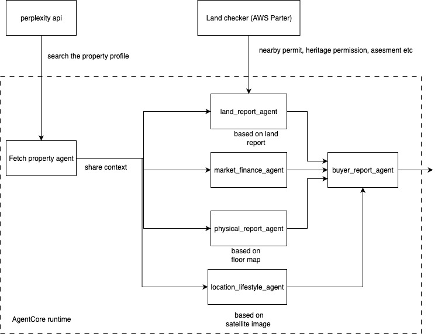
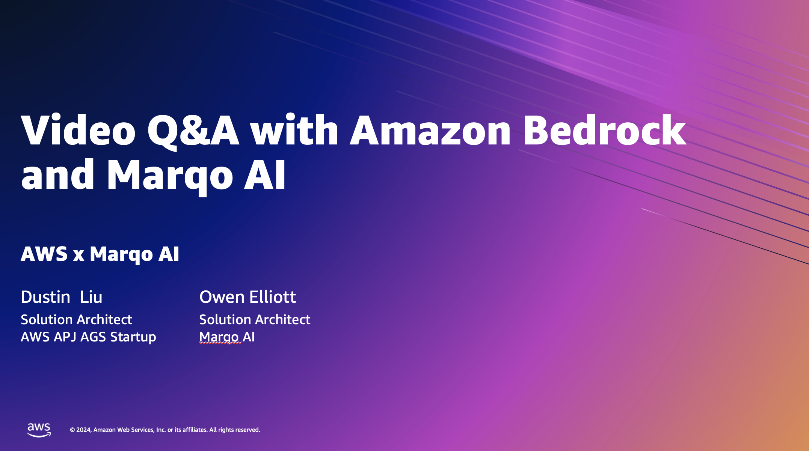
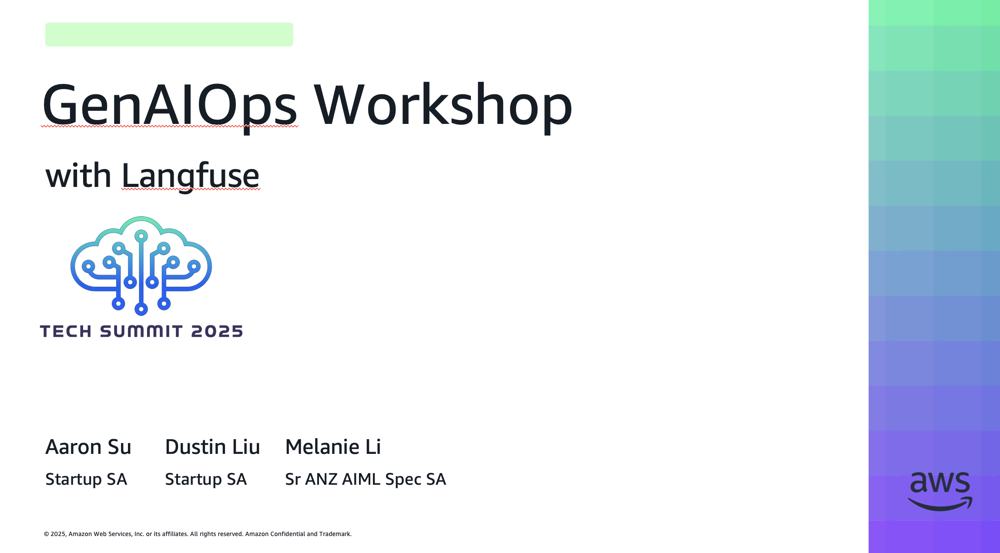
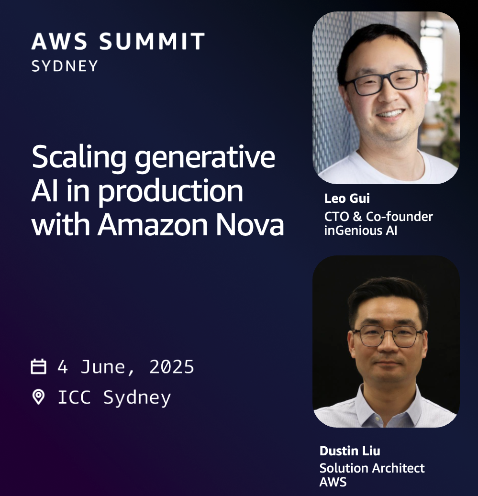

Speaking
Deep Dives, Summit Speaking & Hackathon
2025 OneANZ Agentic Hackathon
Multi-Agent Powered Property Buyer Agency
Hackathon ML / Generative AI / Agentic AI
Video Q&A with Amazon Bedrock and Marqo AI
ML / Generative AI / Agentic AI
Observability for GenAI Applications with Amazon Bedrock and Langfuse
TFC Summit
ML / Generative AI / Agentic AI
GenAIOps with Langfuse
Tech Summit ML / Generative AI / Agentic AI
Scaling Generative AI in Production with Amazon Nova
Sydney Summit Data Analytics
Frugal Data Foundation for AI with Athena, DBT and Iceberg
Tech Summit